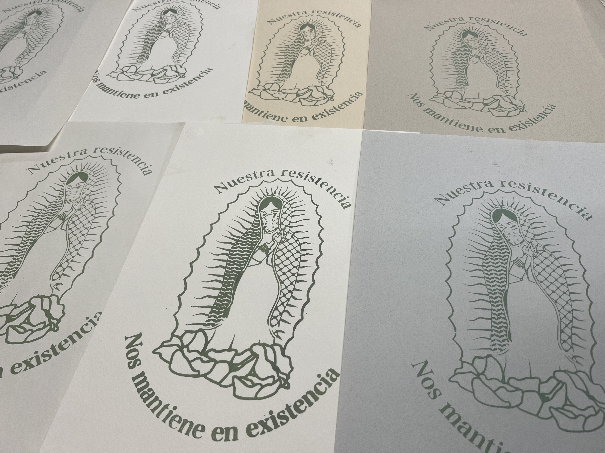
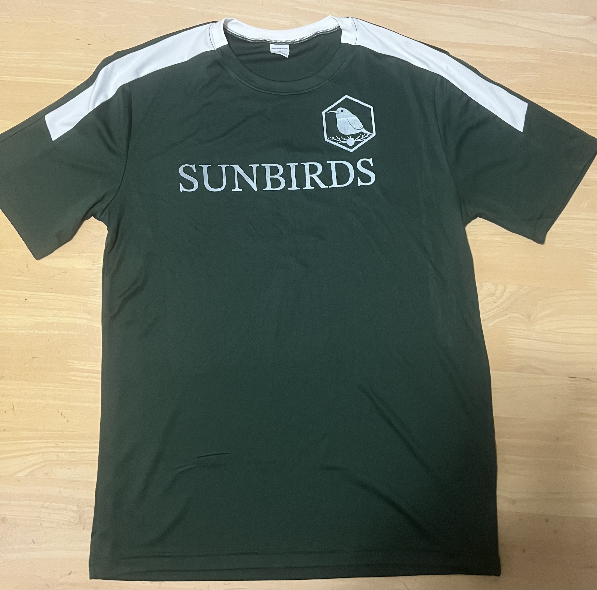

Work examples
Music
Ambient work
Most of my ambient work happened between 2021-2023, I self released a couple of singles and performed in multiple venues across Davis/Sac/Bay Area. An example of a performance can be found in the following link:
Cumbias esotericas de Aztlan
This is a full length album that is in the process of being released. The album covers topics on immigration, international solidarity and degrowth. The first part of the album was released in August 15 2025 and can be listened in the following link:
Second part is planned to be released sometime in November and part 3 planned to be released in early 2026.
Illustration/Prints
Print Making
My work in print making covers similar topics as in my music. Previous work has been used in promotional materials for events, and clothes such as bandanna and shirts


 
Events